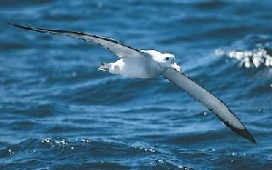

Vándoralbatrosz

A világ egyik legnagyobb szárnyfesztávolságú madara, kiterjesztett szárnyainak szélessége 3,5 méter, a vándoralbatrosz (Diomedea exulans) bámulatosan hosszú ideig képes siklani a levegõben: gyakran több ezer kilométert is megtesz egyetlen repüléssel. Hosszabb idõt csupán a költési és fiókanevelési idõszakban tölt a parton, közelrõl csupán ilyenkor figyelhetõ meg. Ez ugyanakkor életüknek legnagyobb megpróbáltatása is. A fiókanevelés ugyanis hatalmas kihívások elé állítja a szülõket. A vándoralbatroszok emberi szemmel nézve a szülõi önfeláldozás és az örök hûség mintaképei. Azonban csak az emberi értelem ruházza fel õket eme nemes tulajdonságokkal. A valóságban ennek a gyönyörû madárfajnak esélye sem lenne a fennmaradásra, ha a párok nem fognának össze az utódnevelésben. Szükségük is van erre az összefogásra, mert a környezet nagyon zord és a fióka hatalmas étvágyú. A vándoralbatroszok azzal, hogy hatalmas termetûvé váltak az evolúció során, arra ítéltették magukat, hogy hatalmas utódokat kell nevelniük. Emiatt arra kényszerültek, hogy csupán egyetlen fiókát neveljenek, azt is mindössze kétévente.

A fióka 80 grammosan bújik ki a tojásból és azonnal hozzáfog az eleség követeléséhez. Mivel százszoros súlygyarapodást kell elérnie ahhoz, hogy 8 kilogrammos kirepülõ fiókává váljék, rengeteg ennivalót igényel. Néhány hónap elteltével a kicsiny gyermek már háromszor akkora, mint az apja, úgy néz ki a fészekben, mint egy méteres, 35 kilós kuglibábu, fején egy örökké tátogó, éhes csõrrel.
Forrás: http://www.sulinet.hu/tart/ncikk/jc/0/24385/vandoralbatrosz.htm